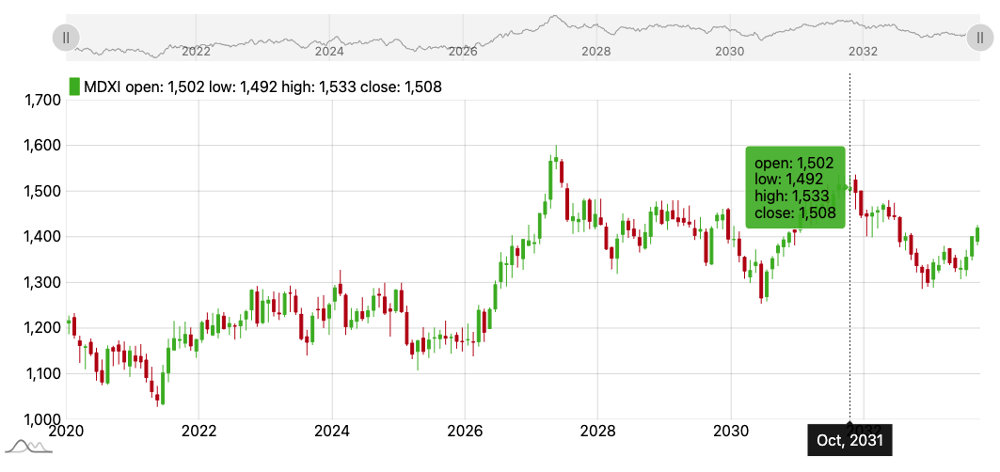
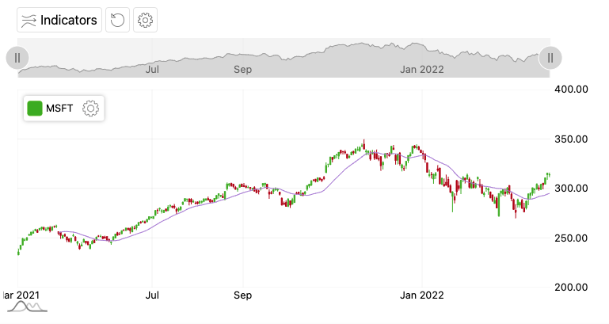

JavaScript チャートライブラリ amCharts5で株価チャートを作成
amChartsで株価チャートを表示する方法
Usage
amChart5をCDNで使用
<!DOCTYPE html>
<html lang="ja">
<head>
<meta charset="UTF-8">
<meta http-equiv="X-UA-Compatible" content="IE=edge">
<meta name="viewport" content="width=device-width, initial-scale=1.0">
<title>Document</title>
<script src="https://cdn.amcharts.com/lib/5/index.js"></script>
<script src="https://cdn.amcharts.com/lib/5/xy.js"></script>
<script src="https://cdn.amcharts.com/lib/5/themes/Animated.js"></script>
<style>
#chartdiv {
width: 100%;
height: 500px;
max-width: 100%
}
</style>
</head>
<body>
<div id="chartdiv"></div>
<script>
// Create root element
// https://www.amcharts.com/docs/v5/getting-started/#Root_element
const root = am5.Root.new("chartdiv");
// Set themes
// https://www.amcharts.com/docs/v5/concepts/themes/
root.setThemes([am5themes_Animated.new(root)]);
function generateChartData() {
const chartData = [];
let firstDate = new Date();
firstDate.setDate(firstDate.getDate() - 1000);
firstDate.setHours(0, 0, 0, 0);
let value = 1200;
for (let i = 0; i < 5000; i++) {
const newDate = new Date(firstDate);
newDate.setDate(newDate.getDate() + i);
value += Math.round((Math.random() < 0.5 ? 1 : -1) * Math.random() * 10);
const open = value + Math.round(Math.random() * 16 - 8);
const low = Math.min(value, open) - Math.round(Math.random() * 5);
const high = Math.max(value, open) + Math.round(Math.random() * 5);
chartData.push({
date: newDate.getTime(),
value: value,
open: open,
low: low,
high: high
});
}
return chartData;
}
const data = generateChartData();
// Create chart
// https://www.amcharts.com/docs/v5/charts/xy-chart/
const chart = root.container.children.push(
am5xy.XYChart.new(root, {
focusable: true,
panX: true,
panY: true,
wheelX: "panX",
wheelY: "zoomX"
})
);
// Create axes
// https://www.amcharts.com/docs/v5/charts/xy-chart/axes/
const xAxis = chart.xAxes.push(
am5xy.DateAxis.new(root, {
groupData: true,
maxDeviation:0.5,
baseInterval: { timeUnit: "day", count: 1 },
renderer: am5xy.AxisRendererX.new(root, {pan:"zoom"}),
tooltip: am5.Tooltip.new(root, {})
})
);
const yAxis = chart.yAxes.push(
am5xy.ValueAxis.new(root, {
maxDeviation:1,
renderer: am5xy.AxisRendererY.new(root, {pan:"zoom"})
})
);
const color = root.interfaceColors.get("background");
// Add series
// https://www.amcharts.com/docs/v5/charts/xy-chart/series/
const series = chart.series.push(
am5xy.CandlestickSeries.new(root, {
fill: color,
calculateAggregates: true,
stroke: color,
name: "MDXI",
xAxis: xAxis,
yAxis: yAxis,
valueYField: "value",
openValueYField: "open",
lowValueYField: "low",
highValueYField: "high",
valueXField: "date",
lowValueYGrouped: "low",
highValueYGrouped: "high",
openValueYGrouped: "open",
valueYGrouped: "close",
legendValueText:
"open: {openValueY} low: {lowValueY} high: {highValueY} close: {valueY}",
legendRangeValueText: "{valueYClose}",
tooltip: am5.Tooltip.new(root, {
pointerOrientation: "horizontal",
labelText: "open: {openValueY}\nlow: {lowValueY}\nhigh: {highValueY}\nclose: {valueY}"
})
})
);
// Add cursor
// https://www.amcharts.com/docs/v5/charts/xy-chart/cursor/
const cursor = chart.set(
"cursor",
am5xy.XYCursor.new(root, {
xAxis: xAxis
})
);
cursor.lineY.set("visible", false);
// Stack axes vertically
// https://www.amcharts.com/docs/v5/charts/xy-chart/axes/#Stacked_axes
chart.leftAxesContainer.set("layout", root.verticalLayout);
// Add scrollbar
// https://www.amcharts.com/docs/v5/charts/xy-chart/scrollbars/
const scrollbar = am5xy.XYChartScrollbar.new(root, {
orientation: "horizontal",
height: 50
});
chart.set("scrollbarX", scrollbar);
const sbxAxis = scrollbar.chart.xAxes.push(
am5xy.DateAxis.new(root, {
groupData: true,
groupIntervals: [{ timeUnit: "week", count: 1 }],
baseInterval: { timeUnit: "day", count: 1 },
renderer: am5xy.AxisRendererX.new(root, {
opposite: false,
strokeOpacity: 0
})
})
);
const sbyAxis = scrollbar.chart.yAxes.push(
am5xy.ValueAxis.new(root, {
renderer: am5xy.AxisRendererY.new(root, {})
})
);
const sbseries = scrollbar.chart.series.push(
am5xy.LineSeries.new(root, {
xAxis: sbxAxis,
yAxis: sbyAxis,
valueYField: "value",
valueXField: "date"
})
);
// Add legend
// https://www.amcharts.com/docs/v5/charts/xy-chart/legend-xy-series/
const legend = yAxis.axisHeader.children.push(am5.Legend.new(root, {}));
legend.data.push(series);
legend.markers.template.setAll({
width: 10
});
legend.markerRectangles.template.setAll({
cornerRadiusTR: 0,
cornerRadiusBR: 0,
cornerRadiusTL: 0,
cornerRadiusBL: 0
});
// set data
series.data.setAll(data);
sbseries.data.setAll(data);
// Make stuff animate on load
// https://www.amcharts.com/docs/v5/concepts/animations/
series.appear(1000);
chart.appear(1000, 100);
</script>
</body>
</html>

インジケーターも標準搭載している
下はMAを表示した状態

ソースコード
Reference
amcharts
amcharts stock
amcharts candlestick
amcharts indicators
amcharts indicators control
amcharts custom indicators